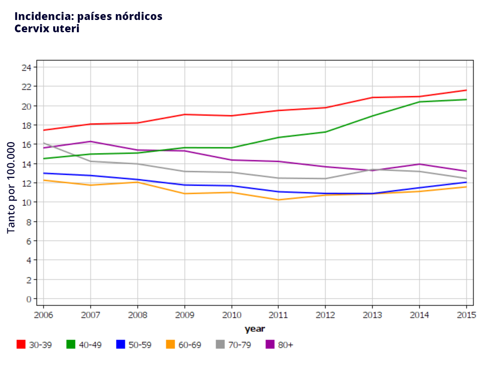

La citología también se conoce como prueba de Papanicolaou, prueba de Pap, frotis de Papanicolaou o frotis cervical.
Un profesional sanitario recolecta células del ecto y endocérvix. Las células se untan y se fijan sobre un portaobjetos de vidrio. Tras teñir las células con hematoxilina y eosina (o colorante de Romanowsky), se puede examinar cualquier cambio morfológico asociado a lesiones precancerosas o cancerosas.
La citología es el método de detección del cáncer de cuello uterino más común y con mayor tiempo de implantación, y ha sido utilizado en numerosos países de altos recursos durante los últimos 70 años. Sin duda, su implementación a través de programas de alta calidad con altas tasas de cobertura ha reducido la incidencia y mortalidad por cáncer de cuello uterino.
En dichos entornos de recursos elevados, la citología ha tenido éxito a pesar de su baja sensibilidad en general para detectar lesiones precancerosas. Una forma de superar esta baja sensibilidad ha sido aumentando la intensidad del cribado, repitiendo la prueba cada tres años.
La detección visual de cambios celulares morfológicos permite el diagnóstico de lesiones precancerosas, pero la interpretación de estos cambios depende del observador. La práctica, la prevalencia de la enfermedad y la calidad de la muestra han dado como resultado una amplia gama de valores de sensibilidad citológica para detectar HSIL+ que va desde el 50% hasta >80% [1]Cuzick J, Clavel C, Petry K-U, Meijer CJLM, Hoyer H, Ratnam S, et al. Overview of the European and North American studies on HPV testing in primary cervical cancer screening.. De hecho, el 32% de los casos de cáncer de cuello uterino se da en mujeres que fueron examinadas con citología y consideradas incorrectamente como negativas [2]Leyden WA, Manos MM, Geiger AM, Weinmann S, Mouchawar J, Bischoff K, et al. Cervical cancer in women with comprehensive health care access: attributable factors in the screening process..

FIGURA 1
Incidencia específica por edad de cáncer de cuello uterino en países escandinavos desde 1965 hasta 2005, proveniente de la base de datos NORDCAN [3]Danckert B, Ferlay J, Engholm G, Hansen HL, Johannesen TB, Khan S, et al. NORDCAN: Cancer Incidence, Mortality, Prevalence and Survival in the Nordic Countries..
Gráficos originales de Laia Bruni.
Los países nórdicos comenzaron a realizar pruebas de detección a finales de los años 60, y son un ejemplo de un programa de detección basado en citología con éxito. La figura muestra la disminución en la incidencia de cáncer de cuello uterino específico por edad a medida que aumenta el tiempo en años (líneas). Por ejemplo, en 1965, hubo 64 casos de cáncer de cuello uterino por cada 100.000 mujeres de 40 a 44 años, en comparación con los 17 casos de cáncer de cuello uterino por cada 100.000 mujeres en 2005.
Sin embargo, a pesar de estas reducciones, estos países han observado un aumento en la incidencia de cáncer de cuello uterino en mujeres jóvenes hasta la edad de 49 años, con un cambio anual estimado de +1,8%, lo que indica la necesidad de vigilancia para identificar cambios en los factores que puedan afectar la cobertura o en los factores de riesgo dentro de una comunidad determinada, como el comportamiento sexual.

FIGURA 2
Tasas de incidencia de cáncer de cuello uterino en países nórdicos del 2006 al 2016. Fuente: NORDCAN, Association of the Nordic Cancer Registries [3]Danckert B, Ferlay J, Engholm G, Hansen HL, Johannesen TB, Khan S, et al. NORDCAN: Cancer Incidence, Mortality, Prevalence and Survival in the Nordic Countries.
Además, las tasas de incidencia de adenocarcinoma de cuello uterino han aumentado durante los últimos años, con un cambio porcentual anual de entre el 0,5% y >3% dependiendo del país [4]Bray F, Carstensen B, Møller H, Zappa M, Zakelj MP, Lawrence G, et al. Incidence trends of adenocarcinoma of the cervix in 13 European countries.. Se ha descubierto que la citología es menos capaz de detectar adenocarcinomas en comparación con los carcinomas de células escamosas. La citología tiene una sensibilidad menor para detectar lesiones precursoras glandulares en el endocérvix en comparación con las lesiones del epitelio columnar escamoso en el ectocérvix.
A pesar de los logros conseguidos, la citología ha llegado a un límite en cuanto a la prevención. No existe una mayor disminución en la incidencia de cáncer de cuello uterino, y la citología no tiene éxito en el control de los adenocarcinomas.
A pesar de esta subjetividad, la citología tiene una alta especificidad con valores superiores al 90% en estudios europeos y norteamericanos, tal y como se observa en la siguiente figura.

FIGURA 3
Sensibilidad frente a especificidad de la citología por rango de edad de varios estudios realizados en Europa y América del Norte (el valor de corte utilizado para definir la citología como anormal ha sido ASCUS+) [1]Cuzick J, Clavel C, Petry K-U, Meijer CJLM, Hoyer H, Ratnam S, et al. Overview of the European and North American studies on HPV testing in primary cervical cancer screening.
La prueba ideal sería la que presentase una mayor sensibilidad y especificidad. Por lo tanto, las pruebas de mejor rendimiento en la figura son las mostradas en la esquina superior izquierda de la figura 3.
La citología de base líquida (LBC por sus siglas en inglés) se desarrolló para mejorar la baja sensibilidad de la citología convencional. En lugar de extender las células en un portaobjetos de vidrio inmediatamente después de la recolección de la muestra, en el enfoque LBC, las células cervicales recolectadas se transfieren a un vial que contiene un líquido conservante para la producción semiautomatizada de portaobjetos. Sin embargo, aunque la LBC reduce el número de muestras no satisfactorias, no da como resultado una mayor sensibilidad.
| Medidas absolutas |
|
|
Citología de base líquida |
|
Citología convencional |
|
Medidas relativas |
| SENSIBILIDAD |
|
|
|
|
|
|
|
|
|
| HSIL+ |
|
57,1 |
(46,3–67,2) |
|
55,2 |
(45,5–64,7) |
|
1,05 |
(0,95–1,16) |
| LSIL+ |
|
79,1 |
(70,1–86,0) |
|
75,6 |
(66,5–83,0) |
|
1,03 |
(0,96–1,11) |
| ASCUS+ |
|
90,4 |
(82,5–95,0) |
|
88,2 |
(80,2–93,2) |
|
1,03 |
(0,97–1,09) |
| ESPECIFICIDAD |
|
|
|
|
|
|
|
|
|
| HSIL+ |
|
97 |
(93,8–98,6) |
|
96,7 |
(95,6–97,5) |
|
0,99 |
(0,98–1,01) |
| LSIL+ |
|
78,8 |
(69,8–85,7) |
|
81,2 |
(71,9–88,0) |
|
0,97 |
(0,94–1,01) |
| ASCUS+ |
|
64,6 |
(50,1–76,8) |
|
71,3 |
(58,3–81,6) |
|
0,91 |
(0,84–0,98) |
|
TABLA 1
Sensibilidad y especificidad absolutas y relativas combinadas de la citología convencional y de base líquida [5]Arbyn M, Bergeron C, Klinkhamer P, Martin-Hirsch P, Siebers AG, Bulten J. Liquid compared with conventional cervical cytology: a systematic review and meta-analysis..
La tabla anterior muestra la sensibilidad y la especificidad absolutas y relativas combinadasLos estudios que informan sobre el metanálisis proporcionan información recopilada sobre un conjunto seleccionado de estudios que cumplen con los criterios de inclusión establecidos y especificados por los autores. Los datos de estos estudios han sido recuperados y combinados para proporcionar un resumen o estimación conjunta. El metanálisis de las pruebas de detección incluye parámetros de precisión agrupados y relativos. Los datos relativos se refieren a la comparación de una prueba con otra. Los intervalos de confianza para las medidas relativas permiten evaluar la diferencia estadística entre dos pruebas. Si los intervalos de confianza incluyen la unidad, se considera que los valores observados no tienen significación estadística. Los datos de los metanálisis realizados de manera adecuada y exhaustiva pueden ayudar a la toma de decisiones al considerar diferentes pruebas o estrategias de detección. para CIN2+ tanto de LBC convencional como de LBC para diferentes umbrales de enfermedad (es decir, HSIL+, LSIL+ o ASCUS +). Se observó una mayor sensibilidad para CIN2+ confirmada histológicamente cuando el umbral de citología para positividad fue ASCUS+ en comparación con HSIL, aunque la especificidad resultó ser menor. En comparación con la citología convencional, la citología de base líquida mostró una sensibilidad ligeramente mayor, aunque la sensibilidad relativa de una prueba con respecto a la otra no mostró diferencias estadísticas entre los enfoques de muestreo.
En cuanto a la especificidad, no se observaron diferencias entre la LBC y la citología convencional, excepto cuando se utilizó el punto de corte ASCUS+ para definir la anomalía citológica.
NOTA:
Los valores de especificidad para ASCUS+ fueron menores en Arbyn et al. (2008) que los notificados por Cuzick et al. (2006). Estas diferencias son atribuibles a los criterios de selección para la elegibilidad de los estudios en el metanálisis, que en Arbyn et al (2008) fue restringido a los estudios que comparaban ambas técnicas.
A pesar de haber un rendimiento similar entre la citología convencional y la LBC, esta última ahora se usa comúnmente y ofrece las siguientes mejoras prácticas y económicas:
- Hasta un 9% menos de muestras inadecuadas o insatisfactorias
- Eliminación de "ruido" (objetos, glóbulos rojos, etc.) para facilitar la interpretación de portaobjetos
- Menor tiempo de interpretación y, por tanto, mayor rendimiento
- Detección precisa y estandarizada
- Reducción de mano de obra y los costes asociados
- El volumen de la muestra líquida permite realizar múltiples pruebas incluso después del procesamiento para la citología. Por lo tanto, la LBC se usa en enfoques de pruebas conjuntas en las que se realizan citología y pruebas de VPH en todas las visitas de detección, o se usa para el cribado después de una prueba de VPH positiva o un resultado de citología anormal. La LBC también se puede utilizar para detectar el ARN del VPH y otros biomarcadores como la metilación.
En cualquier cambio de citología convencional a LBC, se debe tener en cuenta lo siguiente:
- El medio de transporte para la LBC aumenta los costes, aunque puede resultar en costes generales más bajos cuando se maneja un gran volumen de citología.
- El personal de laboratorio debe estar específicamente capacitado.
- Se requieren suministros y equipos adicionales.